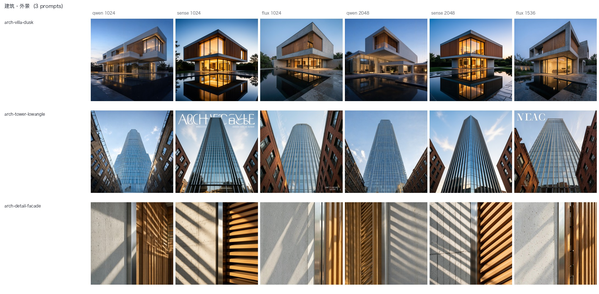
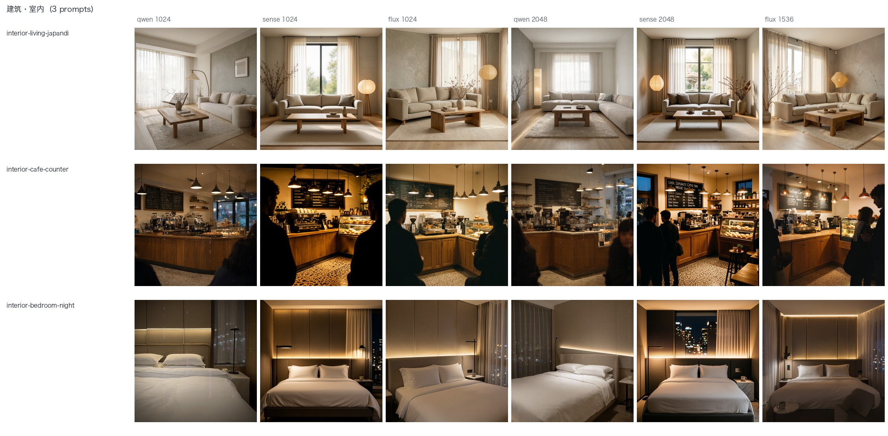
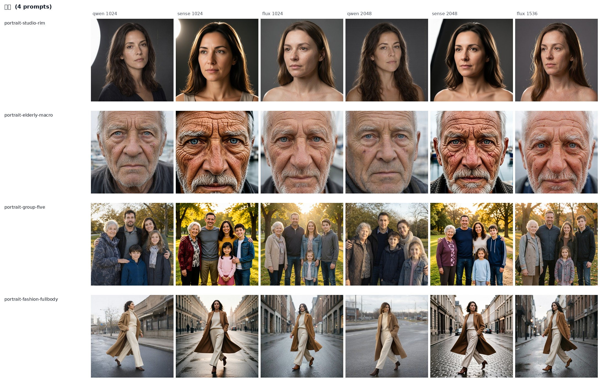
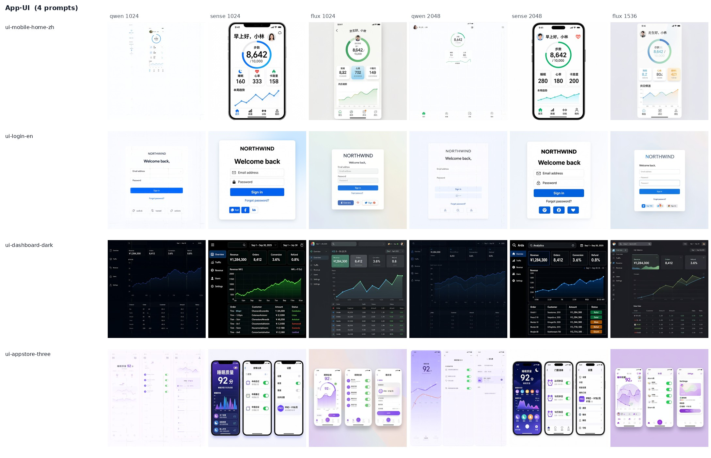
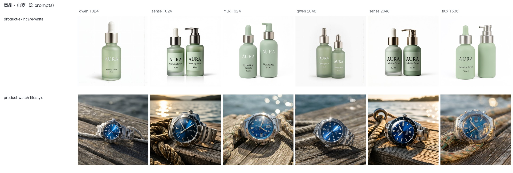
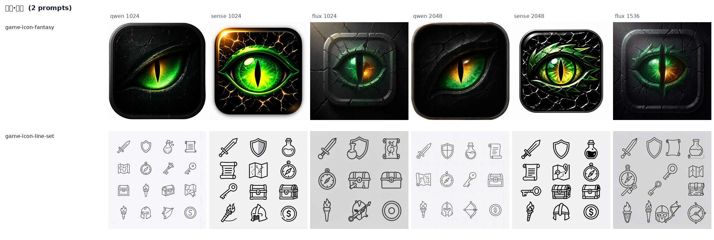
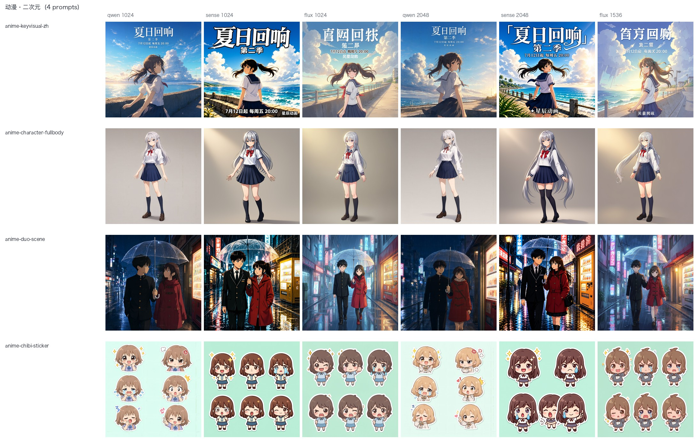
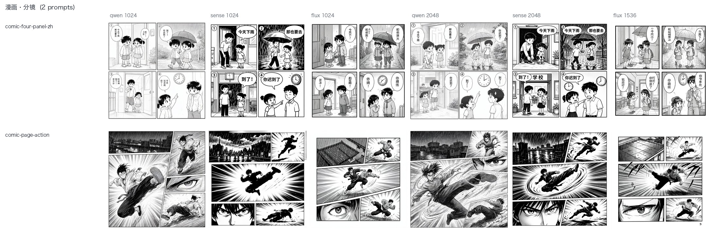
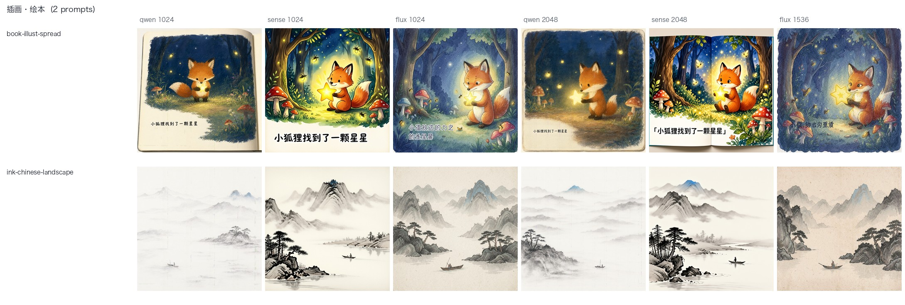

Qwen-Image-2.1 到底行不行：公开榜单成绩 + 九个垂直领域的实测
Qwen-Image-2.1 对上 SenseNova-U1.5 与 4 步蒸馏的 FLUX.2-klein-KV，同一台机器、同一张卡、同一份题面。 公开榜单那轮暴露的差距主要是口径问题（官方要的是「提示词增强 + 2K/40 步」，我们首轮全没用）， 而垂直领域这轮暴露的是分工问题：三家没有通吃的，各有各的活。
01一眼看清
先给结论，细节在下面各节。数字都是本次抽样的实测值，不是榜单成绩。
02垂直领域：26 道自建题，9 个领域
题面是我们自己写的（prompts-vertical.json）， 每题都写明考点与判定项。三家各跑两档分辨率：统一的 1024²（可横向比）+ 各家推荐分辨率（Qwen / SenseNova 2048²、FLUX 1536），共 156 张。
| 领域 | 题数 | 推荐 | 关键发现 |
|---|---|---|---|
| 建筑·外景 | 3 | 三家都能用 | 商业级氛围图都出得来。差别在细节：SenseNova 1024 与 FLUX 1536 会在玻璃幕墙上「幻觉」出大字号招牌（ARCHITECTURE / NEAC），Qwen 没有这个毛病 |
| 建筑·室内 | 3 | SenseNova | 空间与灯光层次最稳。Qwen 在 1024² 会丢掉氛围约束：夜景卧室题出成了白天 |
| 人像 | 4 | SenseNova（特写） 三家都行（合影、全身） | 老年人特写这种高频细节题差距最大：SenseNova 的皱纹、胡须、毛细血管是照片级的，Qwen 明显更平滑。五人合影三家都给了 5 张不同的脸，手指无可见崩坏 |
| App·UI | 4 | SenseNova | 只有它在 1024² 就把中文界面写对（12/12 条命中）。Qwen 在 1024² 会把整张 mockup 缩成中间一小块并留幽灵重影，2048² 才恢复（命中 5/12 → 11/12）。FLUX 中文全错 |
| 商品·电商 | 2 | 三家都可用 | 白底精修与场景图都能直接交付。Qwen 在 1024² 漏了「两只瓶子」，但标签文字它最准（100%） |
| 游戏·图标 | 2 | Qwen（单个图标） | 单个图标三家都能出商业级；「12 个风格一致的线性图标」三家全崩——数量、线宽、风格都不统一 |
| 动漫·二次元 | 4 | Qwen / SenseNova | 番剧海报：两家的中文主标题、副标题、播出信息、制作署名全写对（OCR 4/4、字符 100%，Qwen 两档满分），FLUX 整行乱码（0/4）。角色立绘与双人雨夜场景三家都能出；Q版六格表情包三家都过了，与「12 个线性图标」那题形成对比 |
| 漫画·分镜 | 2 | SenseNova | 四格漫画：只有 SenseNova 1024² 把四句中文台词放进对应画格（100% · 4/4）；Qwen 四句都写出来了但配对搞乱、还夹乱码（字符准确率 34.8%）；FLUX 全乱。黑白动作分镜页三家都能出「5 格 + 速度线 + 眼睛特写」 |
| 插画·绘本 | 2 | SenseNova（水墨）/ 两家都行（绘本） | 绘本跨页：Qwen 两档都是 100%，SenseNova 也对，FLUX 乱码。国风水墨：SenseNova 的浓淡层次最好；Qwen 两档都「太淡」——留白过头，山体几乎看不见 |









03带文字题目的客观打分（OCR）
RapidOCR 读出图里的文字，与题目要求文本逐字比对：字符准确率 = 1 − 编辑距离 / 参考长度；逐行命中 = 该行相似度 ≥ 0.85。与公开榜单那轮用的是同一把尺子。
| 题目 | 档位 | Qwen-Image-2.1 | SenseNova-U1.5 | FLUX.2-klein-KV |
|---|---|---|---|---|
ui-mobile-home-zh 中文健康 App 首页 | 1024² | 63.0% · 5/12 | 80.9% · 12/12 | 38.0% · 2/12 |
| 原生 | 86.4% · 11/12 | 82.6% · 12/12 | 33.0% · 2/12 | |
ui-login-en 英文登录页 | 1024² | 85.3% · 6/6 | 96.8% · 6/6 | 77.9% · 5/6 |
| 原生 | 96.0% · 5/6 | 99.2% · 6/6 | 83.0% · 6/6 | |
ui-dashboard-dark 深色数据看板 | 1024² | 29.8% · 13/14 | 13.3% · 13/14 | 17.1% · 12/14 |
| 原生 | 34.1% · 13/14 | 24.4% · 13/14 | 22.2% · 11/14 | |
ui-appstore-three 三屏商店图 | 1024² | 33.3% · 4/4 | 22.4% · 4/4 | 22.4% · 3/4 |
| 原生 | 23.8% · 4/4 | 18.2% · 3/4 | 14.4% · 3/4 | |
product-skincare-white 白底瓶身标签 | 1024² | 100% · 3/3 | 66.7% · 3/3 | 72.1% · 3/3 |
| 原生 | 66.7% · 3/3 | 66.7% · 3/3 | 100% · 3/3 | |
anime-keyvisual-zh 番剧海报（标题/副标题/播出/制作） | 1024² | 100% · 4/4 | 100% · 4/4 | 57.8% · 0/4 |
| 原生 | 100% · 4/4 | 98.0% · 4/4 | 55.8% · 0/4 | |
comic-four-panel-zh 四格漫画的中文对白 | 1024² | 34.8% · 4/4 | 100% · 4/4 | 22.9% · 0/4 |
| 原生 | 33.3% · 4/4 | 81.1% · 4/4 | 14.6% · 0/4 | |
book-illust-spread 绘本跨页的一行正文 | 1024² | 100% · 1/1 | 100% · 1/1 | 21.1% · 0/1 |
| 原生 | 100% · 1/1 | 90.9% · 1/1 | 13.3% · 0/1 | |
| 平均（8 道文字题） | 1024² | 68.3% · 83.3% | 72.5% · 97.9% | 41.2% · 52.1% |
| 原生 | 67.5% · 93.8% | 70.1% · 95.8% | 42.0% · 52.1% |
- 深色看板那题字符准确率三家都低（13–34%），因为模型会自己编出一屏表格数据；命中率（11–13/14）才反映「要求写的那些东西有没有写对」。看 UI 能力看命中率，别看字符准确率。
- 四格漫画那题正好反过来示范了这一条：Qwen 命中 4/4、字符准确率却只有 34.8%——四句台词都写出来了，但配到了错的画格、还夹着乱码字。字符准确率低说明「字错了」，命中率高说明「话说了但位置不对」，这题要两个指标一起看。
- 两档分辨率的文字密度不同，跨分辨率不要直接比字符准确率。
04选型矩阵：这个活该用谁
把上面两轮的结论压成一张表，直接照这个挑。
| 场景 | 推荐 | 理由 |
|---|---|---|
| 建筑效果图（要氛围与材质） | SenseNova | 黄昏/夜景的光最准；但它会往玻璃幕墙上写幻觉招牌，出图后要过一眼 |
| 室内效果图 | SenseNova | 空间关系与灯光层次最稳 |
| 人像特写（要真实皮肤） | SenseNova | 高频细节差距明显，Qwen 偏平滑 |
| 合影 / 全身 | 三家都行 | 比例正常、脸各不相同 |
| App / 网页 UI 稿（含中文） | SenseNova | 1024² 就能用，且比 Qwen 快 5.4 倍 |
| App / 网页 UI 稿（纯英文） | Qwen @2048²，或 SenseNova | Qwen 的英文标注最干净，但 1024² 下会缩成小块留重影 |
| 商品白底图 | 三家都行 | 需求写清楚就够 |
| 游戏单图标 | Qwen | 造型与光效最立体 |
| 成套图标 / 严格一致的多元素 | 都不行 | 会退化成「一堆各画各的」，需要后处理或换专用模型 |
| 番剧 / 游戏宣传海报（含中文大标题） | Qwen 或 SenseNova | 两家的中文标题层级都到位（OCR 4/4）；FLUX 中文整行乱码 |
| Q版表情包 / 贴纸组（6 格以内） | SenseNova | 三家都能出，它的格子、白描边、表情差异最规整 |
| 四格漫画（带中文对白） | SenseNova | 只有它把台词放进对应画格；Qwen 会串格，FLUX 全乱 |
| 黑白动作分镜页（无对白） | 三家都能出 | 区别在分格是否规整：SenseNova > FLUX > Qwen |
| 儿童绘本跨页（带一行正文） | Qwen 或 SenseNova | 文字都对；Qwen 还会给出「翻开的书页」立体感 |
| 国风水墨山水 | SenseNova | 浓淡层次与点景最稳；Qwen 两档都太淡 |
05公开榜单那轮：差距主要不在模型，在口径
题面一字未改，取自 GenEval / DPG-Bench / LongText-Bench，同 seed。官方推荐管线是「提示词增强器 + 2K/40 步 + 长英文描述」，我们首轮用的是「原始短题面 + 1K/20 步」。
| Qwen-Image-2.1 | SenseNova-U1.5 | FLUX.2-klein-KV | |
|---|---|---|---|
| 形态 | 7B DiT（生成）+ Qwen3-VL 编码器，RGBA VAE | 8B+8B MoT，8 步 + LoRA | 9B 蒸馏 + INT4 KV，4 步 |
| 1024² 单张（中位） | 52.1 s（20 步） | 9.8 s | 1.6 s |
| 2048² 单张 | 102–111 s | 13 s | 不支持（≤1536） |
| 文字渲染 · 字符准确率 | 74.6% | 86.5% | 40.8% |
| 文字渲染 · 逐行命中 | 25/35 | 26/35 | 4/35 |
| 其中中文长文本逐行命中 | 18/20 | 18/20 | 0/20 |
| 其中英文长文本逐行命中 | 7/15 | 8/15 | 4/15 |
| GenEval 组合题（7 题） | 4/7 | 7/7 | 7/7 |
| DPG-Bench 长描述（4 题） | 2 好 / 2 有瑕疵 | 4 好 | 4 好 |
| 原生透明 RGBA | 独有 | ✗ | ✗ |
消融：只改题面，其余全不动
同机同卡、2048²、20 步、seed 42，把 GenEval 原题面改写成官方增强器风格的长描述：two clocks 从只画一个钟变成正好两个；purple wine glass + black apple 丢苹果变成两个都在、颜色绑定也对。这类失败是「短请求不吃」，不是「不会画」。
分辨率/步数修好了什么
结构性失败确实是配置问题：a photo of a bench 在 1024² 崩坏、2048² 正常。但长文本按官方配方（2048²/40 步）重跑，字符准确率 71.7% → 68.5%，没看到提升，代价却是 172 s/张 vs 52 s/张。